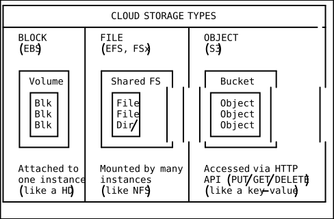
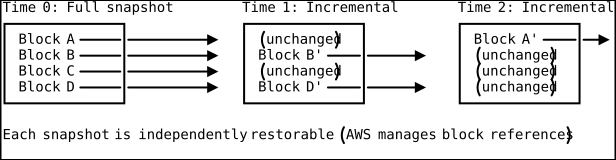
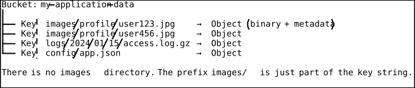
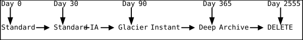
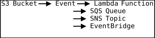
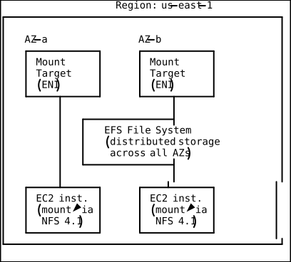
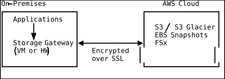
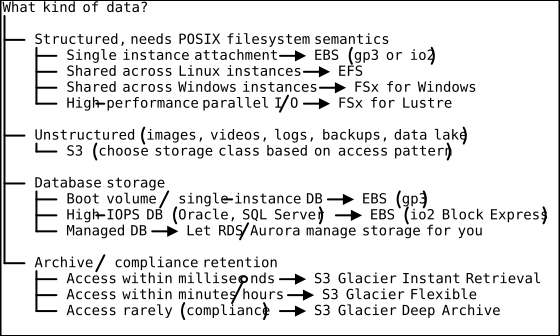

Cloud Storage Architecture
Introduction
Storage is one of the three foundational pillars of cloud computing alongside compute and networking. Unlike compute, which is transient — instances come and go — storage is where your data lives, persists, and must be protected. Choosing the wrong storage type, tier, or replication strategy can mean the difference between a system that handles petabytes gracefully and one that bleeds money or loses data.
Cloud storage divides into three fundamental categories: block storage (raw disk volumes), file storage (shared file systems with POSIX semantics), and object storage (flat namespace for unstructured data). Each exists because no single storage paradigm optimally serves all workloads. This document covers all three in depth, including internal architectures, performance characteristics, cost optimization strategies, and decision frameworks.
Storage Type Overview

Block Storage: Amazon EBS
What Is EBS?
Elastic Block Store provides persistent block-level storage volumes that attach to EC2 instances over the network. An EBS volume appears as a raw block device to the operating system — you format it with a filesystem (ext4, XFS) and mount it. EBS volumes persist independently of the instance lifecycle.
EBS Volume Types
| Type | Name | IOPS (max) | Throughput (max) | Latency | Use Case |
|---|---|---|---|---|---|
| gp3 | General Purpose SSD | 16,000 | 1,000 MB/s | < 1 ms | Boot volumes, most workloads |
| gp2 | General Purpose SSD (prev) | 16,000 | 250 MB/s | < 1 ms | Legacy; migrate to gp3 |
| io2 | Provisioned IOPS SSD | 64,000 | 1,000 MB/s | sub-ms | Databases requiring consistent I/O |
| io2 BE | io2 Block Express | 256,000 | 4,000 MB/s | sub-ms | Largest databases, SAP HANA |
| st1 | Throughput Optimized HDD | 500 | 500 MB/s | ~5-10 ms | Big data, log processing |
| sc1 | Cold HDD | 250 | 250 MB/s | ~5-10 ms | Infrequent access archives |
gp3 vs gp2: Why gp3 Wins
gp2 links IOPS to volume size (3 IOPS per GB, bursting to 3,000). To get 16,000 IOPS, you need a 5,334 GB volume even if you only need 100 GB of space.
gp3 decouples IOPS and throughput from volume size. A 100 GB gp3 volume provides 3,000 IOPS and 125 MB/s baseline for free, and you can provision up to 16,000 IOPS and 1,000 MB/s independently at additional cost.
# Create a gp3 volume with custom IOPS and throughput
aws ec2 create-volume \
--volume-type gp3 \
--size 100 \
--iops 6000 \
--throughput 400 \
--availability-zone us-east-1a \
--encrypted \
--tag-specifications 'ResourceType=volume,Tags=[{Key=Name,Value=myapp-data}]'io2 Block Express
For the most demanding database workloads, io2 Block Express volumes provide up to 256,000 IOPS with sub-millisecond latency. They support Multi-Attach, allowing a single volume to be attached to up to 16 Nitro-based instances simultaneously (useful for clustered databases).
EBS Snapshots
Snapshots are incremental backups stored in S3 (managed by AWS, not visible in your S3 buckets). Only changed blocks since the last snapshot are stored.

# Create a snapshot
aws ec2 create-snapshot \
--volume-id vol-0123456789abcdef0 \
--description "Pre-deployment backup $(date +%Y%m%d-%H%M)"
# Create a volume from a snapshot (can be in a different AZ)
aws ec2 create-volume \
--snapshot-id snap-0123456789abcdef0 \
--availability-zone us-east-1b \
--volume-type gp3
# Copy snapshot to another region (for DR)
aws ec2 copy-snapshot \
--source-region us-east-1 \
--source-snapshot-id snap-0123456789abcdef0 \
--destination-region eu-west-1EBS Encryption
EBS encryption uses AES-256 and integrates with AWS KMS. When encryption is enabled:
- Data at rest on the volume is encrypted
- Data in transit between the instance and EBS is encrypted
- Snapshots are encrypted
- Volumes created from encrypted snapshots are encrypted
# Enable EBS encryption by default for the entire account/region
aws ec2 enable-ebs-encryption-by-default
# Set a custom default KMS key
aws ec2 modify-ebs-default-kms-key-id \
--kms-key-id arn:aws:kms:us-east-1:123456789012:key/abcd-1234-efghObject Storage: Amazon S3
S3 Internal Architecture
S3 is not a file system. It is a flat key-value object store. The “folders” you see
in the console are a UI convention based on the / delimiter in keys.

Internally, S3 stores each object across a minimum of three Availability Zones within a region. The data is written synchronously to all AZs before S3 returns a success response, providing 99.999999999% (11 nines) durability.
S3 Storage Classes
| Class | Durability | Availability | Min Duration | Use Case |
|---|---|---|---|---|
| S3 Standard | 11 nines | 99.99% | None | Frequently accessed data |
| S3 Intelligent-Tiering | 11 nines | 99.9% | None | Unknown or changing access |
| S3 Standard-IA | 11 nines | 99.9% | 30 days | Infrequent but rapid access |
| S3 One Zone-IA | 11 nines | 99.5% | 30 days | Reproducible infrequent data |
| S3 Glacier Instant | 11 nines | 99.9% | 90 days | Archive with instant retrieval |
| S3 Glacier Flexible | 11 nines | 99.99%* | 90 days | Archive (minutes to hours) |
| S3 Glacier Deep Archive | 11 nines | 99.99%* | 180 days | Long-term archive (12+ hours) |
*After restoration
S3 Lifecycle Policies
Automate object transitions between storage classes based on age:
{
"Rules": [
{
"ID": "ArchiveOldLogs",
"Status": "Enabled",
"Filter": {"Prefix": "logs/"},
"Transitions": [
{"Days": 30, "StorageClass": "STANDARD_IA"},
{"Days": 90, "StorageClass": "GLACIER_IR"},
{"Days": 365, "StorageClass": "DEEP_ARCHIVE"}
],
"Expiration": {"Days": 2555}
}
]
}
S3 Versioning
Versioning preserves every version of every object. Deleting a versioned object creates a “delete marker” rather than actually removing data. This provides protection against accidental deletes and overwrites.
# Enable versioning
aws s3api put-bucket-versioning \
--bucket my-bucket \
--versioning-configuration Status=Enabled
# List object versions
aws s3api list-object-versions \
--bucket my-bucket \
--prefix config/app.jsonCombine versioning with lifecycle rules to automatically delete old versions:
{
"Rules": [{
"ID": "DeleteOldVersions",
"Status": "Enabled",
"NoncurrentVersionTransitions": [
{"NoncurrentDays": 30, "StorageClass": "STANDARD_IA"}
],
"NoncurrentVersionExpiration": {"NoncurrentDays": 90}
}]
}S3 Replication
Cross-Region Replication (CRR): Replicate objects to a bucket in a different region for DR, compliance, or latency.
Same-Region Replication (SRR): Replicate to another bucket in the same region for log aggregation, live replication between accounts, or compliance.
# Enable CRR (requires versioning on both buckets)
aws s3api put-bucket-replication \
--bucket source-bucket \
--replication-configuration '{
"Role": "arn:aws:iam::123456789012:role/s3-replication-role",
"Rules": [{
"Status": "Enabled",
"Destination": {
"Bucket": "arn:aws:s3:::destination-bucket-eu",
"StorageClass": "STANDARD_IA"
}
}]
}'Presigned URLs
Grant time-limited access to private objects without changing bucket policy or making objects public:
# Generate a presigned URL valid for 1 hour
aws s3 presign s3://my-bucket/reports/q4-financials.pdf --expires-in 3600
# Output: https://my-bucket.s3.amazonaws.com/reports/q4-financials.pdf?X-Amz-...Use cases: allowing users to download private files, enabling direct-to-S3 uploads from browsers (presigned POST), sharing temporary links to objects.
S3 Event Notifications
S3 can trigger actions when objects are created, deleted, or restored:

# Configure event notification to trigger Lambda on object creation
aws s3api put-bucket-notification-configuration \
--bucket my-upload-bucket \
--notification-configuration '{
"LambdaFunctionConfigurations": [{
"LambdaFunctionArn": "arn:aws:lambda:us-east-1:123456789012:function:ProcessUpload",
"Events": ["s3:ObjectCreated:*"],
"Filter": {
"Key": {"FilterRules": [{"Name": "suffix", "Value": ".jpg"}]}
}
}]
}'S3 Performance Optimization
S3 supports 3,500 PUT/COPY/POST/DELETE and 5,500 GET/HEAD requests per second per prefix. For high-throughput workloads:
- Distribute keys across prefixes to parallelize I/O
- Use multipart upload for objects larger than 100 MB
- Use S3 Transfer Acceleration for long-distance uploads (uses CloudFront edge)
- Use byte-range fetches for large objects (GET with Range header)
- Use S3 Select / Glacier Select to retrieve subsets of data within objects
# Multipart upload for large files
aws s3 cp large-file.tar.gz s3://my-bucket/ \
--expected-size 10737418240 \
--storage-class STANDARD_IAFile Storage: Amazon EFS
What Is EFS?
Elastic File System provides a fully managed NFS file system that can be mounted by thousands of EC2 instances simultaneously. It grows and shrinks automatically as you add and remove files — no provisioning required.
EFS Architecture

EFS Performance Modes
| Mode | Latency | Throughput | Use Case |
|---|---|---|---|
| General Purpose | < 1 ms | Good | Web serving, CMS, home dirs |
| Max I/O | Higher | Higher aggregate | Big data, media processing |
| Elastic Throughput | < 1 ms | Scales with load | Spiky workloads |
EFS Storage Classes
- Standard: Frequently accessed files
- Infrequent Access (IA): Files not accessed for 30+ days (configurable), 92% lower cost
- Archive: Files not accessed for 90+ days, lowest cost
Lifecycle management automatically moves files between classes based on access patterns.
# Create EFS with lifecycle policy
aws efs create-file-system \
--performance-mode generalPurpose \
--throughput-mode elastic \
--encrypted \
--lifecycle-policies \
"[{\"TransitionToIA\":\"AFTER_30_DAYS\"},{\"TransitionToArchive\":\"AFTER_90_DAYS\"}]"Amazon FSx
FSx provides fully managed third-party file systems:
| FSx Variant | Protocol | Use Case |
|---|---|---|
| FSx for Lustre | Lustre | HPC, ML training, video processing |
| FSx for Windows | SMB | Windows workloads, .NET applications |
| FSx for NetApp ONTAP | NFS/SMB | Hybrid cloud, multi-protocol access |
| FSx for OpenZFS | NFS | Linux workloads needing ZFS features |
FSx for Lustre can be linked to an S3 bucket, presenting S3 objects as files in a high-performance POSIX file system. This is powerful for ML training: your training data lives cheaply in S3, and Lustre provides fast parallel access during training.
AWS Storage Gateway
Storage Gateway bridges on-premises storage and AWS cloud storage:

Three modes:
- S3 File Gateway: NFS/SMB interface backed by S3
- Volume Gateway: iSCSI volumes backed by EBS snapshots
- Tape Gateway: Virtual tape library backed by S3 Glacier
Storage Decision Matrix

Cost Optimization Strategies
1. Right-Size EBS Volumes
Monitor actual IOPS and throughput usage with CloudWatch. Many volumes are over-provisioned. A 1 TB gp3 volume costs the same as a 100 GB gp3 volume in IOPS if you do not provision additional IOPS, but the storage cost is 10x.
2. Use S3 Intelligent-Tiering
If you cannot predict access patterns, Intelligent-Tiering automatically moves objects between access tiers with no retrieval charges. There is a small monitoring fee per object, but it is cheaper than guessing wrong.
3. Delete Unused EBS Snapshots
Old snapshots accumulate silently. Audit regularly:
# Find snapshots older than 90 days
aws ec2 describe-snapshots \
--owner-ids self \
--query "Snapshots[?StartTime<='$(date -d '-90 days' +%Y-%m-%d)'].{ID:SnapshotId,Size:VolumeSize,Date:StartTime}" \
--output table4. Use S3 Storage Lens
S3 Storage Lens provides organization-wide visibility into storage usage, activity trends, and cost optimization recommendations across all buckets.
5. Compress Before Storing
For log files and text data, compressing with gzip or zstd before uploading to S3 can reduce storage costs by 70-90%.
6. Use EFS IA and Archive Tiers
EFS Infrequent Access is 92% cheaper than Standard. With lifecycle policies, cold files move automatically. Ensure your access patterns justify the per-access retrieval charge.
Data Protection and Durability
| Service | Durability | Mechanism |
|---|---|---|
| S3 | 99.999999999% (11 9s) | 3+ AZ replication, checksums |
| EBS | 99.999% (5 9s) | Replicated within AZ |
| EFS | 99.999999999% (11 9s) | 3 AZ replication |
| Glacier | 99.999999999% (11 9s) | 3+ AZ replication |
EBS is the outlier with “only” five nines of durability because it replicates within a single AZ. This is why EBS snapshots (stored in S3, 11 nines) are critical for disaster recovery.
Practical Takeaways
-
Default to gp3 for EBS volumes. It is cheaper than gp2 and decouples IOPS from volume size.
-
Enable EBS encryption by default at the account level. There is zero performance impact on Nitro instances.
-
Use S3 versioning + MFA Delete for critical buckets to protect against accidental or malicious deletion.
-
Lifecycle policies are mandatory for any bucket that accumulates data over time. Without them, storage costs grow linearly forever.
-
Never store application state on instance store. Use it only for caches, temporary scratch data, or shuffle space.
-
Monitor EBS burst balance on gp2 volumes (or migrate to gp3 to avoid the burst/credit model entirely).
-
Use multipart upload for any S3 object over 100 MB. The AWS CLI does this automatically with
aws s3 cp. -
Block public access at the account level unless you explicitly need public buckets:
aws s3control put-public-access-block \
--account-id 123456789012 \
--public-access-block-configuration \
"BlockPublicAcls=true,IgnorePublicAcls=true,BlockPublicPolicy=true,RestrictPublicBuckets=true"DSA Connections
Hash Maps — S3 Object Storage and Key-Value Lookups
A hash map is a data structure that maps keys to values using a hash function, providing average-case O(1) lookups, inserts, and deletes. S3 is, at its core, a massively distributed hash map: each object is stored under a key (like images/profile/user123.jpg), and the storage layer hashes this key to determine which partition and which set of storage nodes hold the data. When you call GetObject, S3 does not traverse a directory tree — it hashes the key, locates the partition, and retrieves the object directly. This is why S3 has no concept of directories (the “folders” in the console are a UI trick based on the / delimiter) and why S3 can achieve 5,500 GET requests per second per prefix — the hash-based distribution ensures that keys with different prefixes land on different partitions, enabling parallelism. The recommendation to distribute keys across prefixes for high-throughput workloads is essentially the same advice as choosing a good hash function to avoid bucket collisions.
LRU Cache (Doubly-Linked List + Hash Map) — EFS Lifecycle and S3 Intelligent-Tiering
An LRU (Least Recently Used) cache combines a doubly-linked list with a hash map to evict the least-recently-accessed item in O(1) time: the hash map provides fast lookups, and the linked list maintains access order. S3 Intelligent-Tiering and EFS lifecycle policies implement an LRU-like eviction strategy at storage scale. When S3 Intelligent-Tiering monitors object access patterns, it maintains metadata tracking the last access timestamp for each object. Objects not accessed for 30 days are moved to Infrequent Access, then to Archive Access after 90 days — mirroring how an LRU cache evicts cold entries to make room for hot ones. Similarly, EFS lifecycle management moves files untouched for 30+ days to Infrequent Access storage at 92% lower cost. The key insight is that these tiered storage systems are applying the same temporal locality principle that makes LRU caches effective: recently accessed data is likely to be accessed again, so it stays in the fast (expensive) tier.
B-Trees — EBS Volume Indexing and Filesystem Metadata
A B-tree is a self-balancing tree data structure that maintains sorted data and allows searches, insertions, and deletions in O(log n) time, with high fanout to minimize disk reads. When you format an EBS volume with ext4 or XFS and mount it to an EC2 instance, the filesystem uses B-tree variants to organize block metadata. XFS in particular uses B+ trees for its inode allocation, directory entries, and extent maps — this is why XFS is the recommended filesystem for high-IOPS workloads on io2 Block Express volumes. Each directory lookup traverses a B+ tree where each node is sized to fit a single disk block (typically 4 KB), maximizing the data retrieved per I/O operation. For a volume with millions of files, the B-tree structure ensures that locating any file requires only 3-4 disk reads regardless of directory size, which is critical when your io2 Block Express volume is handling 256,000 IOPS — every wasted I/O operation matters at that scale.
Incremental Snapshots as Merkle-Like Structures — EBS Snapshot Efficiency
A Merkle tree is a hash tree where every leaf node contains a hash of a data block and every non-leaf node contains a hash of its children, enabling efficient verification and diffing of large datasets. EBS snapshots use a conceptually similar approach to achieve incremental backups: the storage layer maintains a block-level mapping that tracks which blocks have changed since the last snapshot. When you create a new snapshot, EBS compares block hashes between the current volume state and the previous snapshot, and only copies the changed blocks to S3. This is why each snapshot is independently restorable even though it only stores the delta — AWS manages the chain of block references internally, similar to how a Merkle tree can prove the integrity of any leaf by walking the hash chain to the root. The practical benefit is dramatic: a 1 TB volume with 10 GB of changes produces a snapshot that stores only 10 GB of new data, while still being fully restorable as a complete 1 TB volume.